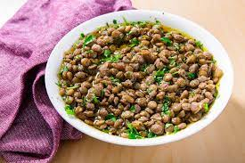

Lentils

Description
These versatile legumes are rich in fiber and protein, making them an essential part of any vegan or vegetarian diet. They're also extremely shelf-stable, making them the perfect pantry item to stock up on.
Ingredients
- Rinse.Place the lentils in a strainer and pick out any debris or shriveled lentils. Thoroughly rinse under running water.
- Cook.Combine 2 cups of liquid for every 1 cup of dried lentils in the inner pot. Season as you like (try adding garlic and bay leaves for added flavor). Turn the pressure valve to the sealing position and cook on high pressure. Refer to cooking times below for how long to cook each type of lentil in the Instant Pot.
- Release pressure.Once the timer is up, allow a natural pressure release for 10 minutes. Then turn the pressure valve to the venting position to quickly release the remainder of the pressure.
- Stir.Open the lid and stir the lentils. Note there will be some extra liquid — allow the lentils to soak it up as you stir and serve.